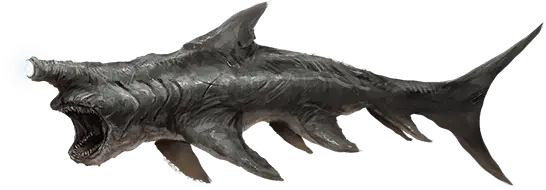

Серый поглотитель
Gray Scavver
Средний Монстр, без мировоззрения

Класс Доспеха 12 (природный доспех)
Хиты 19 (3к8 + 6)
Скорость 0 футов, летая 40 футов
| мод | спас | ||
|---|---|---|---|
| СИЛ | 16 | +3 | +3 |
| ЛОВ | 13 | +1 | +1 |
| ТЕЛ | 15 | +2 | +2 |
| мод | спас | ||
|---|---|---|---|
| ИНТ | 1 | −5 | −5 |
| МДР | 10 | +0 | +0 |
| ХАР | 1 | −5 | −5 |
Чувства тёмное зрение 120 футов, пассивное Восприятие 10
Опасность 1/4 (50 опыта)
Бонус мастерства +2
Особенности
Необычная природа. Поглотитель не нуждается в воздухе.
Действия
Укус. . Рукопашная атака оружием: +5 к попаданию (с преимуществом, если цель — существо с неполными хитами), досягаемость 5 фт., одна цель. Попадание: 7 (1к8 + 3) колющего урона.
Описание
Серые поглотители достигают 6 футов в длину и передвигаются стаями. Запах крови приводит их в неистовство, но ранение одного из них обычно ослабляет их настолько, что вынуждает прекратить атаку.
Поглотители
Поглотители — похожие на акул падальщики, летающие в космосе, и питающиеся всем, что помещается в их пасть. Поглотители не всегда агрессивны. Часто они следуют за более крупными существами, а также кораблями и астероидами, питаясь продуктами жизнедеятельности и выброшенным мусором. Они могут проникать в воздушные оболочки этих тел. Поэтому когда их «хозяин» движется (часто на большой скорости), поглотители не отстают от него. Небольшие виды — коричневые и серые, — редко доставляют неприятности. Крупные виды более грозные, так как не ждут, пока пища сама придёт к ним.
У поглотителя один большой глаз на передней стороне головы. Глаз светится, пока существо бодрствует. Широкая пасть полна острых зубов. Во время сна падальщик лениво летает по кругу, а в остальное время перемещается по космосу подобно акуле в воде.
По часовой стрелке, начиная сверху: ночной поглотитель, серый поглотитель, пустотный поглотитель, коричневый поглотитель.